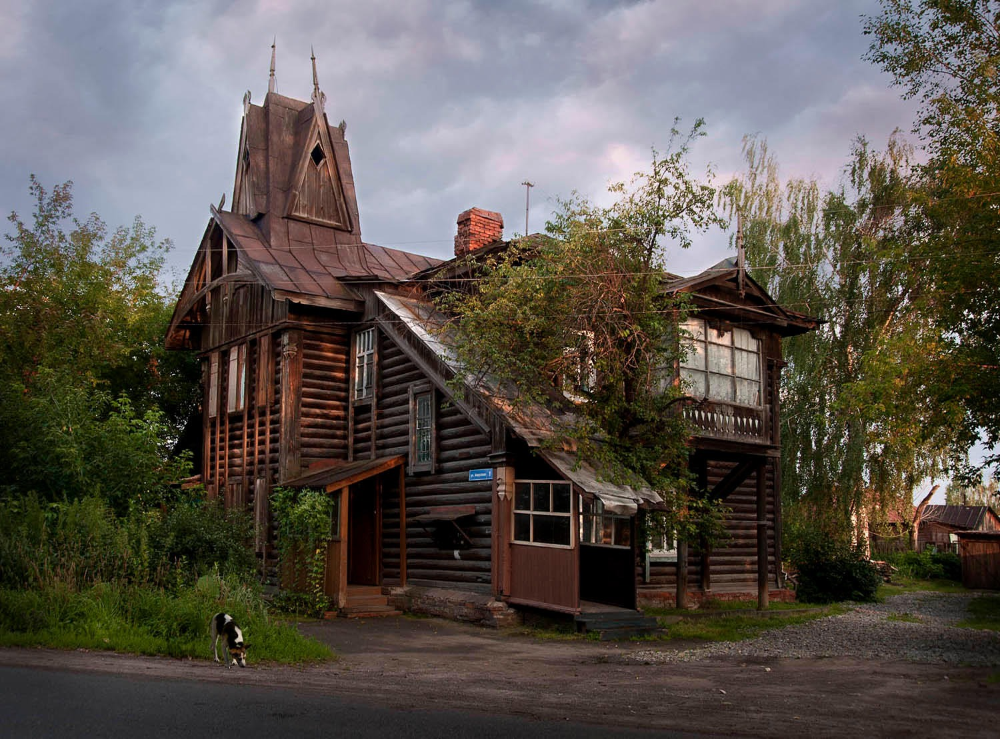
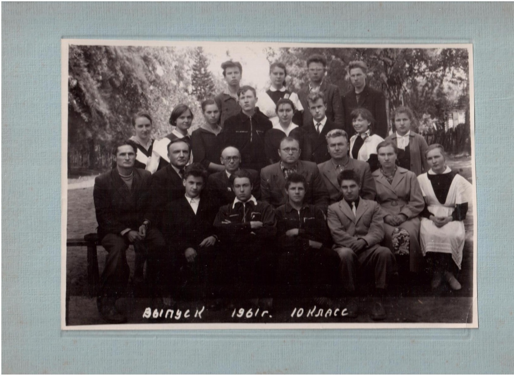
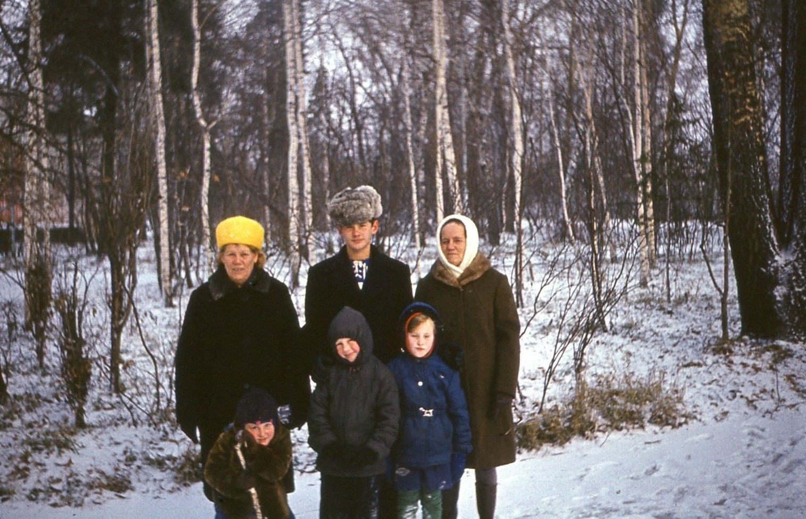
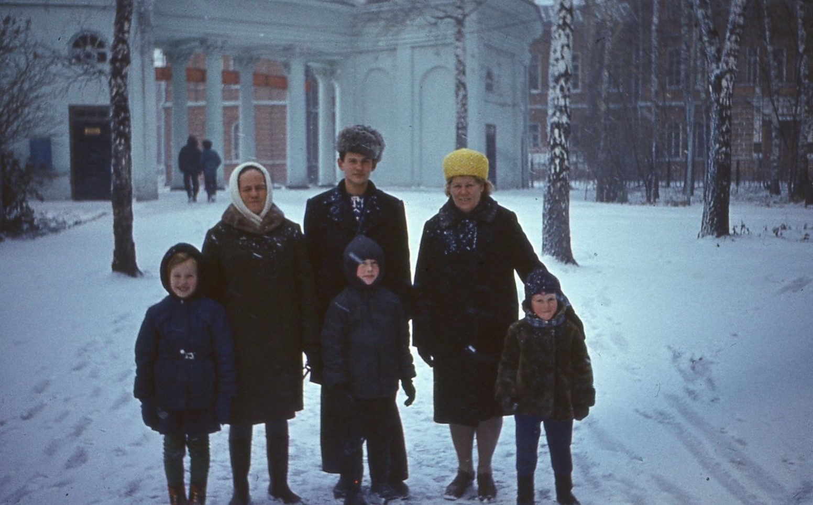
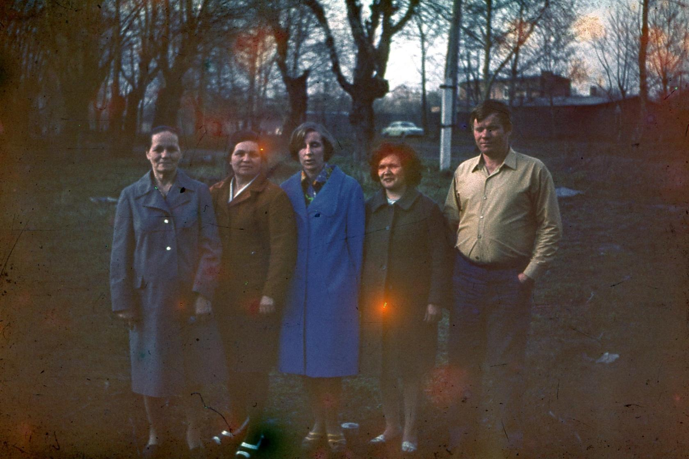
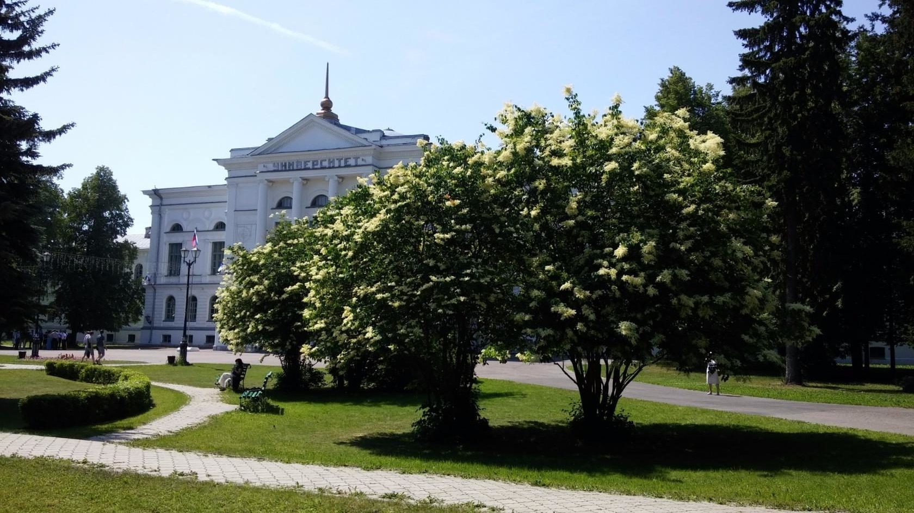
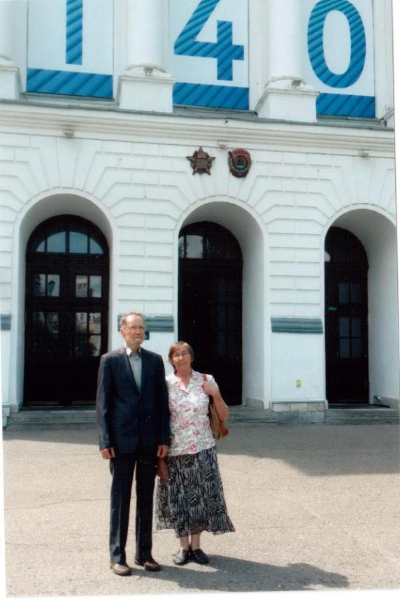
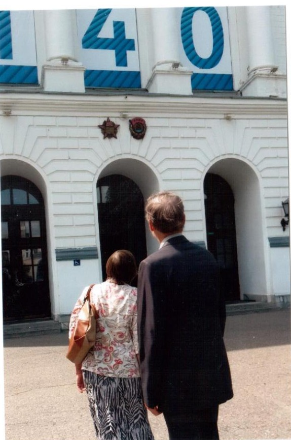
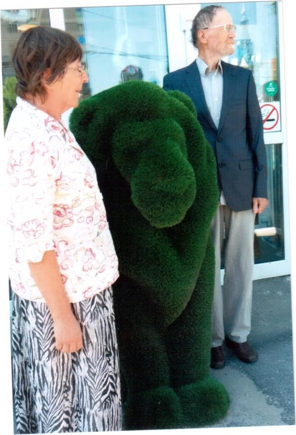

Томск и ТГУ


1961–1978. Студенческие годы на механико-математическом факультете Томского государственного университета. Юрий Афанасьевич окончил мехмат в 1966 году, затем прошёл аспирантуру (1966–1969). С 1970 по 1978 годы преподавал высшую математику в ТГУ — на кафедре общей математики, у геологов, географов и биологов. Лариса Петровна тоже преподавала математику после окончания мехмата.
Молодая семья жила в общежитии на улице Никитина, 4. В 1970 году поженились, родились сыновья Юрий и Константин.



Подробнее об академической работе томского периода — в разделе Наука и математика.
Томск оставался родным городом на всю жизнь — сюда возвращались снова и снова.




Раздел пополняется фотографиями томских лет. Если у вас есть снимки или воспоминания — поделитесь через форму воспоминаний.